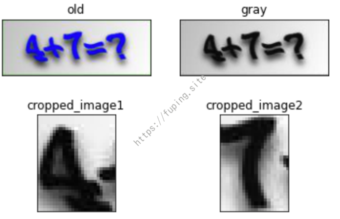
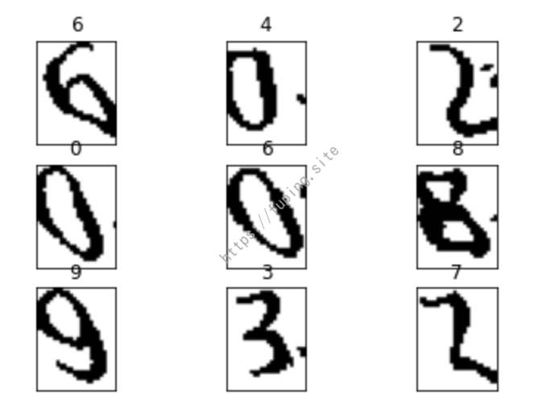

记一次简单计算验证码的识别过程
0x00 前言
某CMS的验证码是简单的计算验证码，都是一位数的加减乘除运算，之前尝试用分割的方法识别，但成功率较低。后来采用了pytorch训练后进行识别，可以达到98%以上的识别率，于是整理一下过程，水一篇文章。
0x01 验证码的获取
首先是验证码的获取，由于爬取验证码还要手工标注，比较麻烦，这里可以通过修改程序来批量生成标注好的样本。
主要代码如下：
1 | import com.google.code.kaptcha.Producer; |
执行结果：
1 | 6-1=? |
通过执行的结果可以发现，生成的验证码中会出现*、/、?等字符，这些字符在作为文件名时不合法，所以需要进行替换。
例如将除号/替换为÷，乘号*替换为×，问号?替换为？。
同时为了避免生成的验证码重复，生成的文件名拼接了时间戳的md5，并用_连接。
替换的代码如下：
1 | String newCapStr = capStr.replace("/","÷").replace("*","×").replace("?","？") + "_" + DigestUtils.md5Hex(""+System.currentTimeMillis())+".jpg"; |
再次执行结果如下：
1 | 8×4=？_b69426246067db177639de42b77082ab.jpg |
然后就是验证码图片的保存。
主要代码如下：
1 | BufferedImage bi = DefaultKaptcha.createImage(capStr); |
生成的验证码如下：


到此获取标注好的验证码已经完成了，下面就开始进行验证码的识别。
0x02 验证码的识别
1.分割识别
最早是根据文章《自动识别验证码破解上学吧题目答案》中的方法来进行验证码的识别，但是由于验证码不太规则，导致识别效果较差，后面就放弃了。这里列出简要过程。
验证码图片为 60×160 像素的，两个数字的范围都是 0 到 9。对图片转成灰度图后并进行分割。
1 | image = Image.open(path).convert("L") |
可以自己找比较合适的分割位置。
分割的效果：

然后进行二值化，遍历灰度图的像素点，这里以阈值66为界限，使得图片的像素点要么为纯黑 0，要么为纯白 255，下图是二值化之后的图片：
接着对验证码样本进行批量切图、转灰度图、二值化：
批量对图片进行分割，然后保存格式为数字_md5(时间戳).jpg
1 | def corpImg(name): |

从中挑选出噪点去除效果最好图片的作为模板，0 到 9 这 10 个数字各一个。
分别遍历这几个模板图片的像素点并存为 0-1 矩阵：首先创建一个 24列 31 行的二维数组（所有元素都为 0），遇到黑色像素点就将 0 变成 1，此处需要注意二维数组中坐标与像素点坐标是相反的。
1 | num_info = [([0] * 24) for i in range(31)] # 创建一个宽度为24，高度为31的二维数组 |
接下来就是识别了
1 | num_info_list = [] # 这个数组用以存储全部数字的 0-1 矩阵 |

从上面来看识别效果不是太好，所以后面就放弃了这种方法。
也可以先分割验证码，之后用ddddocr进行识别，中间的运算符可以采用上述的方法进行识别。这里就说一个思路，不具体实现了。一来比较麻烦，二来是运算符处理的效果也不会太好，但最终的结果会比直接分割识别这种方法好。
这是ddddocr识别效果，有一个没识别出来，不过准确率还挺高。
接下来就使用pytorch进行训练。
2.pytorch识别
pytorch训练验证码的过程都差不多，这里从网上找了一套修改了一下。
样本已经有了，首先对验证码进行分析。验证码字符一共有16种，分别为：
1 | 0123456789+-×÷=？ |
验证码长度为5
1 | captcha_array = list("0123456789+-×÷=？") |
接下来就是Datasets数据加载。
pytorch有非常方便高效的数据加载模块Dataset和DataLoader。
Dataset是数据样本的封装，可以很方便的读取数据。
实现一个Dataset的子类，需要重写__len__和__getitem__方法，__len__需要返回整个数据集的大小，__getitem__提供一个整数索引参数，返回一个样本数据（一个图片张量和一个标签张量）。主要代码如下：
1 | class MyDataset(Dataset): |
其中text2Vec是将验证码进行onehot编码，这里是变成一个5*16的数组。
主要代码:
1 | def text2Vec(text): |
比如说0×4=？转换的结果就如下：
1 | tensor([[1., 0., 0., 0., 0., 0., 0., 0., 0., 0., 0., 0., 0., 0., 0., 0.], # 0 |
对应的还原方法:
1 | def vec2Text(vec): |
DataLoader是Dataset的进一步封装，Dataset每次通过__getitem__方法取到的是一个样本，经过DataLoader封装为dataloader后，每次取的是一个batch大小的样本批次。
主要代码：
1 | transform = transforms.Compose([transforms.ToTensor()]) # 不做数据增强和标准化了 |
transforms是数据预处理操作，一般数据增强就通过transform实现，可以随机亮度，随机翻转，随机缩放等等。此处只使用了ToTensor()，将PIL.Image对象转换成Tensor。
训练采用了CNN神经网络，CNN主要由卷积层，池化层，激活函数组成，再加上一个BatchNorm，BatchNorm叫做批规范化，可以加速模型的收敛速度。
模型的主要代码:
1 | class Net(nn.Module): |
nn.Sequential()可以看作模块的有序容器，可以方便快捷的搭建神经网络。
网络的输入是一个shape为[batch, 3, 60, 180]的张量，batch代表的是一个批次图片数量，3代表输入的图片是3通道的，即RGB，180和60则分别代表图片的宽和高。
经过上结构的卷积后，得到一个shape为[batch, 128, 6, 18]的张量，x.view(x.size(0), -1)将改变张量的shape为[batch, 128*6*18]，再用一个[1024, 16*5]的全连接层映射为一个[batch, 16*5]张量，这个就是模型的输出，其中16代表字符的种类数量，5代表一张验证码图片含有的字符数量。
接下来就是验证码的训练了：
这里使用的是CPU进行训练的，训练样本生成了2000张，测试样本200张，刚开始训练准确率就可以到100%，而且速度不是太慢。
验证码生成的脚本：https://github.com/fupinglee/Calculate_Captcha
如果是在GPU下训练，在CPU下使用模型时，需要进行转换：
torch.load(model_path, map_location=torch.device('cpu'))
训练后测试的结果（200张测试准确率是100%，又另外生成了2000张验证码进行测试）：
经过测试，使用pytorch训练的准确率可以达到99%。
完整代码：https://github.com/fupinglee/CalculateCaptcha_Recognition
0x03 总结
本文通过2种方法来对计算验证码进行识别。第一种方法使用简单，但识别率较低，可以针对一些比较简单的验证码（比如验证码未进行扭曲、干扰等）。第二种方法使用简单，但识别率比较依赖样本的数量，前期验证码标注是一件麻烦事，但对于本文这种简单的验证码，少量的样本准确率也会很高。
0x04 参考
3.验证码代码